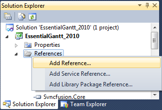
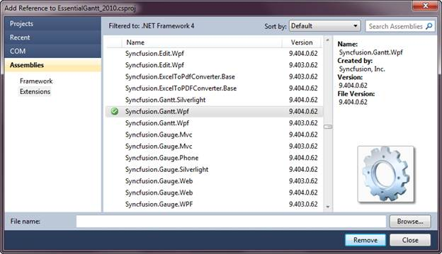

Deployment Requirements
While deploying an application that references Syncfusion Essential Gantt WPF assembly, the following dependencies must be included in the distribution.
· Syncfusion.Core.dll
· Syncfusion.Gantt.Wpf.dll
· Syncfusion.Grid.Wpf.dll
· Syncfusion.GridCommon.Wpf.dll
· Syncfusion.Shared.Wpf.dll
· Syncfusion.ProjIO.Base.dll
Default Deployment Pattern
The following are the steps to deploy the Essential Gantt for WPF:
1. In Visual Studio, Solution Explorer, right click on the References and select Add Reference.

Figure 5: Solution Explorer
2. The Add Reference window opens.

Figure 6: Add Reference
3. Add the following assembly to the project References folder.
· Syncfusion.Gantt.Wpf.dll
· Syncfusion.Grid.Wpf.dll
· Syncfusion.GridCommon.Wpf.dll
· Syncfusion.Linq.Base.dll
· Syncfusion.Shared.Wpf.dll
Fast Deployment Pattern
In Visual Studio Integrated Development Environment (IDE), Solution Explorer, right click the binfolder and add the following assemplies:
· Syncfusion.Gantt.Wpf.dll
· Syncfusion.Grid.Wpf.dll
· Syncfusion.GridCommon.Wpf.dll
· Syncfusion.Linq.Base.dll
· Syncfusion.Shared.Wpf.dll
These assemblies will be available in the following loction:
[Root Folder]:\Program Files\Syncfusion\Essential Studio\[Version number]\Assemblies\4.0